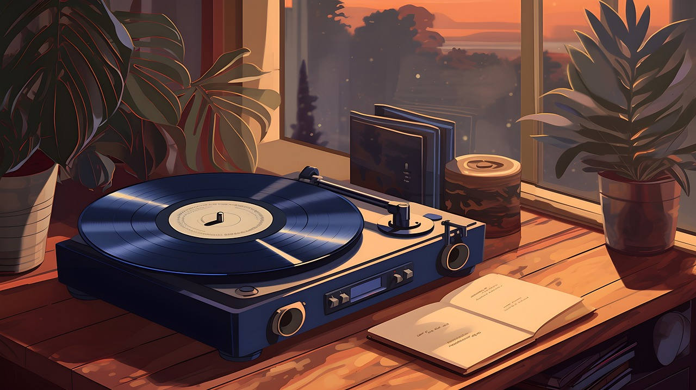
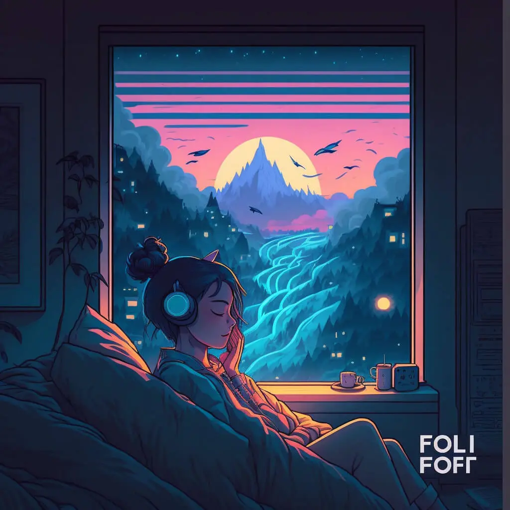

Lofi Hip-Hop
This is perhaps the most popular genre of lo-fi. In general, lo-fi takes a lot of inspiration from hip hop — in particular, their use of drum loops to create rhythm. It is the backbone of the lo-fi genre, with its roots firmly planted in jazz and 90s hip-hop. Lo-fi hip-hop tracks often feature vinyl crackles, tape hiss, and other artifacts that evoke a nostalgic feel. The most prominent YouTube artist for this genre is Lofi Girl, who popularized the genre as well as the iconic image of a Lofi Girl studying. Other notable artists in this subgenre include J Dilla, Nujabes, and Tomppabeats.
Lofi Jazz
Lo-fi jazz is often a more soothing genre than lo-fi hip hop. It makes the most use of string and wind instruments, and it contains a swing and syncopation typical to traditional jazz music. As the name suggests, a key element of this genre is jazz chord progressions, which provide the music with a more thoughtful and somewhat emotional element than its hip-hop counterpart.
Lofi House
Often described as hearing nightclub music from the outside, lo-fi house takes on a more upbeat rhythm compared to other lo-fi genres. Lo-fi house, as the name suggests, is a blend of lo-fi aesthetics and house music elements. This genre mixes the catchy rhythm of the 80s & 90s dance music and combines it with the often-calmer vibe of lo-fi music. The production techniques in lo-fi house lean towards tape saturation, bit-crushing, and analog warmth, creating a distinctively rough yet danceable sound. The result is a nostalgic mix that is perfect to keep you focused and awake while working. A few well-known lo-fi house producers include DJ Seinfeld, Ross From Friends, and Mall Grab.
Lofi Vaporwave
More commonly known as chillwave, lo-fi vaporwave is a genre characterized by its faded sound and escapist lyrics and draws inspiration from 80s and 90s pop culture, video games, and electronic music. Its retro pop sound is often mixed with heavy effects and vintage synthesizers. These subgenres heavily rely on sampling and manipulation of retro sounds, creating a nostalgic yet futuristic atmosphere..